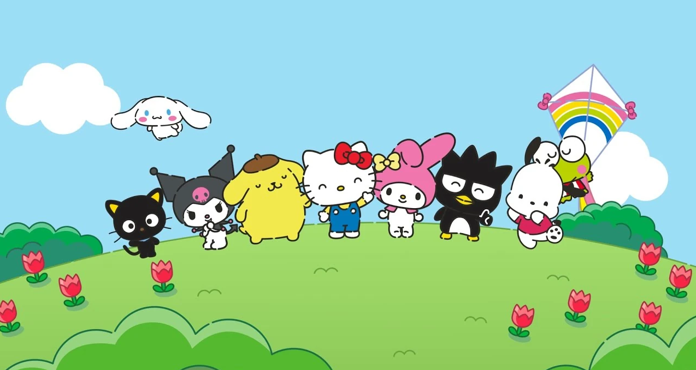

About
Cinnamoroll is a male white and chubby puppy with long ears that enable him to fly. He has blue eyes, pink cheeks, and a tail that resembles a cinnamon roll.Cinnamoroll flies around the town looking for fun and new adventures with his friends and one of his main hobbies is eating.
Loves
- His friends
- Eating
- Cinnamon Rolls
- Naps
- Gaming
Dislikes
- Men
- Vegetables
- Capitalism
- Big Corporations
- Yuuup
Characteristics
- Shy but very friendly
- Can fly through the air by flopping those bigass ears
- Pisces
- INFP
- Works at Cafe Cinnamon
- Scared of ghosts
- He look like a dog bruh
Friends
Hello Kitty
A bright and kind-hearted bitch, very close to her twin sister Mimmy. She is good at baking cookies and loves her mama's homemade apple pie. She likes to play the piano and collect cute things, and her favorite subjects in school are English, music, and art.
Pompompurin
He is a good-natured golden retriever dog, who lives in his own basket at his owner's house. Pompompurin loves eating food, which explains why he's one of the chubbiest Sanrio characters. His favorite food is cream caramel pudding.
MyMelody
She is a very honest, good-natured girl. Her favorite food is almond pound cake. She was born on January 18th in the magical forest of Mariland, the home to many of her friends.
ChocoCat
Chococat is a playful troublemaker who likes to fool around with his friends. She is always the first to catch up on the latest news and likes to gossip.